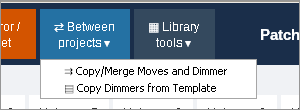
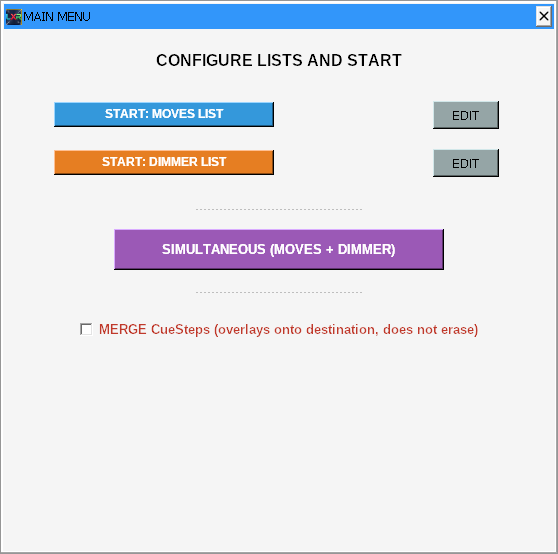
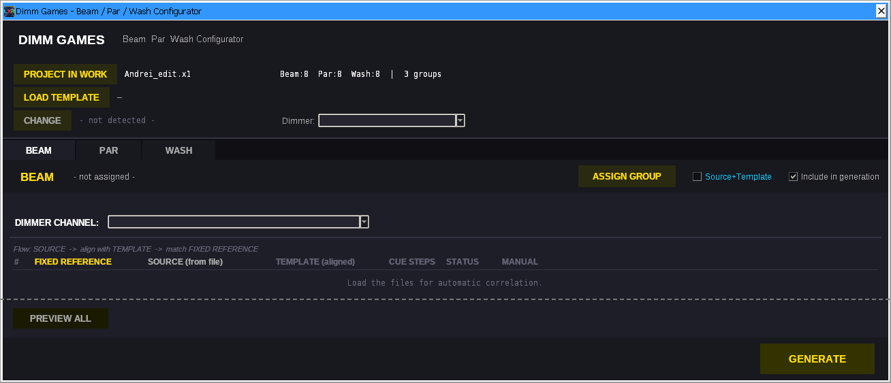

For: Full
Between projects (in +Add Fixture) takes what the buttons of
another project do and writes it into the buttons of the open project, for its own fixtures. The other project
(.x1 or .xR) is only read.

Each run is one entry of Undo; Save writes it into the project file. Closing a window before the end changes nothing.

The first window.
| Window | What you do |
|---|---|
| MAIN MENU | What to copy: START: MOVES LIST (the movement buttons), START: DIMMER LIST (the dimmer buttons) or SIMULTANEOUS (MOVES + DIMMER). EDIT changes the names in a list (kept until the program is closed). MERGE CueSteps (below). |
| The source | The other project's file. |
| Select Source Group and Destination Groups | One group of the other project, and the groups of this one that get its buttons. |
| Channel Mapping -> group | For each destination group, which channel gets which channel of the source; the usual ones are found from the profiles. SAME AS PREVIOUS repeats the mapping of the group before. |
| Fixture Mapping - Multi-Destination | Which source fixture drives which destination fixture, shown with their universes and addresses; FORCE MIRROR (all) sets every group as a mirror image. |
| Final Parameters - Pan/Tilt and Offset | For each group, its All Front pan and tilt and a Pan Offset and Tilt Offset for the movement buttons. CONFIRM AND CONTINUE writes the buttons. |
| CueSteps Difference Report | When a button now has another number of steps: each such button, with the steps it had and the steps it has now. |
A message then says how many buttons and steps were changed, and which buttons of the lists this project does not have.
MERGE CueSteps - ticked, the values are laid over the steps the buttons of this project already have, and what they hold for other fixtures stays. Unticked (as at first), each button gets the steps of the source anew - their names and times too - and what it held for other fixtures in those steps is cleared.

Dimm Games with Andrei_edit.x1 as the project in work, before a template is loaded.
The dimmer games are eight chases of each kind - Light 4 ON-2 OFF, Light 3ON-3OFF, Light R-L Full ... for the beams, the same with Par in front for the pars, WG 1 to WG 8 for the washes. This tool takes them from a template and makes them again for the groups of the open project, whatever their number of fixtures.
| Part | What it is |
|---|---|
| PROJECT IN WORK | The open project (its button reads it again) and how many dimmer game buttons of each kind it has. |
| LOAD TEMPLATE | The model project. Its Beam group and that group's Dimmer channel are found by their names; CHANGE picks others. |
| BEAM, PAR, WASH | One tab for each kind: ASSIGN GROUP - the group of this project; DIMMER CHANNEL - its dimmer; Include in generation; Source+Template - the template's dimmer laid over the button's own steps instead of steps made anew. |
| The rows | For each of the eight: FIXED REFERENCE (its name), SOURCE (the button of this project matched to it), TEMPLATE (the template's), the steps, the status and MANUAL (rename or replace the button matched). |
| PREVIEW ALL | The games played on the screen, as the fixtures of the group will show them. REVERSE marks a game to run its steps the other way round; SAVE CHANGES (REVERSE) keeps the marked ones so. |
| GENERATE | Writes the dimmer games into the buttons of this project. The window stays open; each GENERATE is one Undo. |